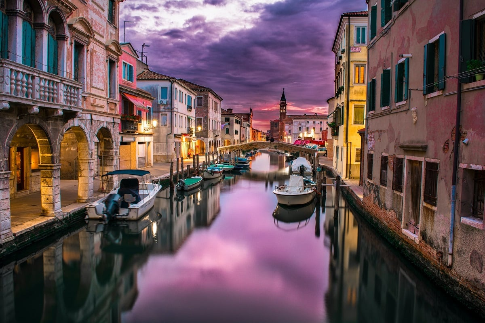
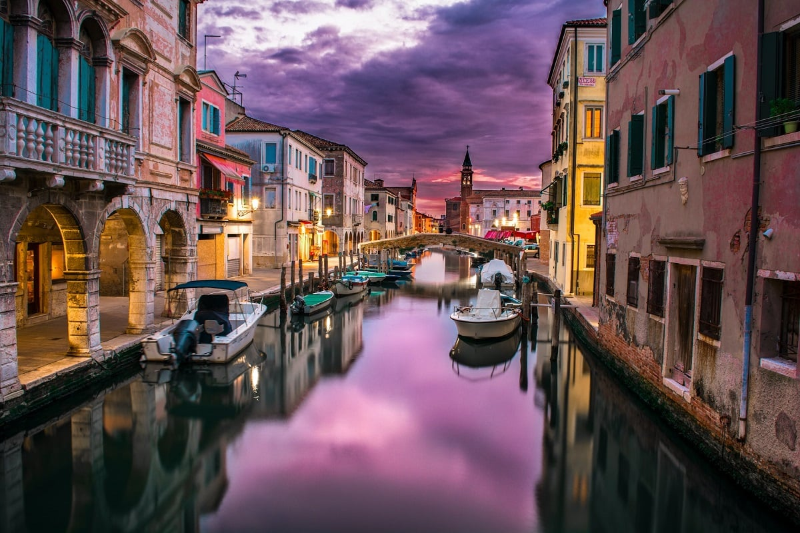

Italy is known for its rich cultural heritage, including art, architecture, and music. The country's cuisine, with its emphasis on fresh ingredients and regional specialties, is famous worldwide. Italy's historical significance, from the ancient Roman Empire to the Renaissance, is evident in its countless landmarks and archaeological sites. Additionally, Italy's stunning landscapes, from the rolling hills of Tuscany to the picturesque Amalfi Coast, attract millions of visitors each year. With its blend of history, culture, and natural beauty, Italy remains a top destination for travelers seeking a truly unforgettable experience.
The Colosseum in Italy has always held a special place in my heart. Growing up, I was fascinated by tales of ancient civilizations and their grand monuments. The Colosseum, with its towering arches and rich history, was like a magnet pulling me toward it. When the opportunity to visit Rome presented itself, I knew that seeing the Colosseum in person was at the top of my list. I wanted to experience the awe-inspiring presence of this ancient amphitheater and immerse myself in its stories.
Venice, Italy, with its maze of canals and centuries-old charm, had always been a dream destination for me. The idea of wandering through narrow alleys, gliding in a gondola along shimmering waterways, and getting lost in the romance of this unique city was simply irresistible. One of the things I was most excited about was exploring the labyrinthine alleys and hidden squares that make Venice so mysterious. With each twist and turn, I stumbled upon quaint cafes, bustling markets, and quiet corners where time seemed to stand still.
The Duomo di Milano, Milan's majestic cathedral, was a sight I had been yearning to behold for as long as I could remember. Its intricate Gothic architecture, adorned with countless spires and statues, seemed like something out of a fairytale. So, when I finally found myself standing in front of this awe-inspiring masterpiece, I felt a surge of excitement and anticipation like never before. The minute I saw a photo of the Duomo di Milano, it cast a spell on me. It looked like something out of a fairytale, all lace-like stone and gargoyle guardians. I'd seen grand churches before, but there was something undeniably special about this one. Maybe it was the sheer size of it, or the intricate details that promised a closer look would reveal countless stories carved in stone.


 
